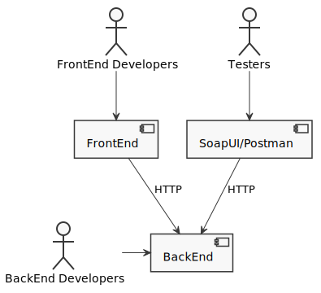
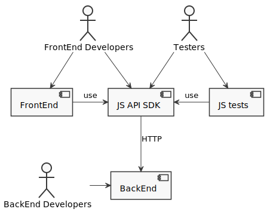

JavaScript API testing
arthurchumak@gmail.com
API testing

Universal JavaScript

Плюсы
Вся мощь JavaScript!!!
Контроль версий
Меньше лишней работы
Созданный SDK прост, тестируется и готов к переиспользованию
Не нужны отдельные тулы => однородные API и Unit тесты
Минусы
Для тестирования нужно минимально знать JS и пару либ
Angular HttpClient
Ссылки
axios - Promise based HTTP client for the browser and node.js
example project